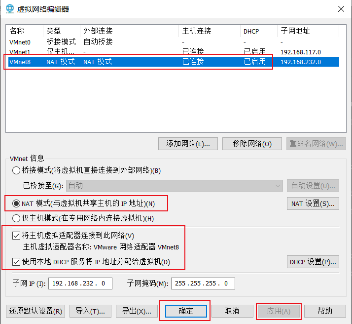
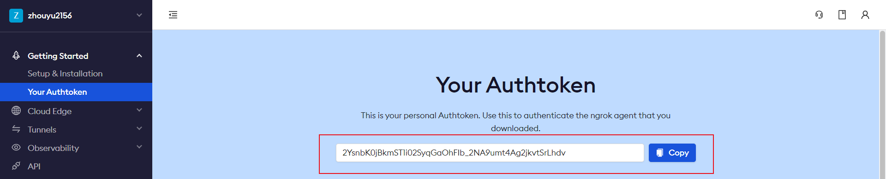
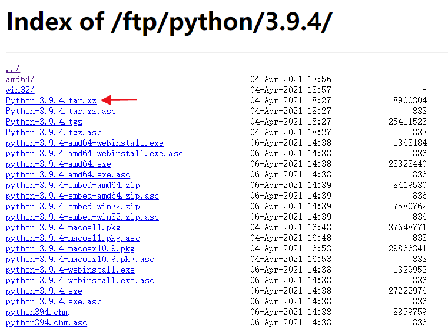
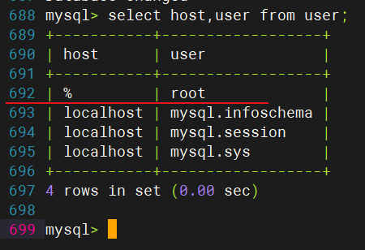
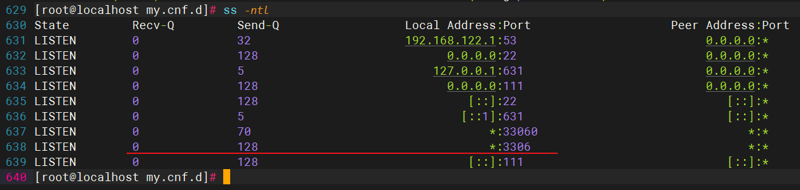
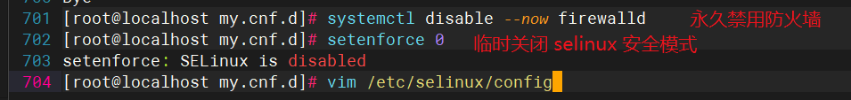

红帽 8 安装教程博客推荐：https://blog.csdn.net/low5252/article/details/101035853
注意：注册好账户后，要完善信息，并进行订阅
xxxxxxxxxx31$ subscription-manager register --username=账户名称 --password='账户对应的密码' --auto-attach # 终端登录红帽子账号2$ yum repolist # 查看仓库名称3$ yum install -y lrzsz # 配置好仓库后，下载安装这个软件，便于后面Linux服务器和本地window电脑进行上传和下载
在Linux上用以下命令查看 ipv4 地址
xxxxxxxxxx121$ ip a2[BaseOS]3name=BaseOS4baseurl=file:///media/cdrom/BaseOS5enabled=16gpgcheck=078[AppStream]9name=AppStream10baseurl=file:///media/cdrom/AppStream11enabled=112gpgcheck=0将ip地址填写到XShell上，然后填写Linux用户名和密码即可进行连接
xxxxxxxxxx11$ rz 回车 # 即可从本地开始选择文件直接上传啦
xxxxxxxxxx11$ sz 要下载的目标文件
推荐好用的 Shell 工具（不同的颜色高亮标识命令、关键字等，很炫酷）：下载地址
详细说明：
参考博客：NAT参考这篇文章你就明白了：https://baijiahao.baidu.com/s?id=1726792174464807810&wfr=spider&for=pc
检查网络管理服务配置和状态：systemctl status NetworkManager
xxxxxxxxxx21$ nmcli device(简写d) help # 查看该工具的命令帮助2$ nmcli connection(简写c) help
网卡配置前提：（一定要勾选上，再重启一下）

xxxxxxxxxx81$ systemctl status NetworkManager # 查网络管理服务状态2$ systemctl start NetworkManager # 如果没有启动，就启动它3$ nmcli n on # 打开网络管理服务开关4$ nmcli d status # 网卡状态列表5$ nmcli d show # 显示网卡详情6$ nmcli d show ens160 # 筛选查看具体网卡详情7$ nmcli d disconnect ens160 # 断开网卡连接8$ nmcli d connect ens160 # 连接网卡
xxxxxxxxxx71$ nmcli c show # 展示连接对象详情2$ nmcli c up ens160 # 激活网卡连接3$ nmcli c add type ethernet con-name ens160_c1 ifname ens160 ipv4.method auto # 添加连接4 添加 类型为ethernet 连接名是ens160_c1 设备是ens160 ipv4连接方式为自动5$ nmcli c up ens160_c1 # 激活连接6$ nmcli d show ens160_c1 # 显示连接详情7$ nmcli c modify ens160_c1 ipv4.address 192.168.132.20/24 # 修改ip地址和子网掩码才能和windows上的255.255.255.0的子网掩码相匹配，XShell中才能连接上
xxxxxxxxxx51$ nmcli c edit ens160_c1 # 进入网络连接配置文件进行编辑配置2$ nmcli>goto address # 跳到属性字段3$ nmcli ipv4.address>back # 用于返回上一层级4$ nmcli>print # 打印该层级或字段包含的内容5$ nmcli>? # 查看nmcli编辑器有哪些命令
网络配置主要内容： （1）、修改配置文件（配置文件/etc/sysconfig/network-scripts/ifcfg-xxx） （2）、图形化配置（了解就行） （3）、nmtui伪图形终端（一定要掌握） （4）、nmcli（很重要！网卡设备详情/连接，连接添加/修改/删除/激活）
网络配置成为高手的三个阶段：按照文档配置服务器网络 -> 排查网络故障 -> 规划网络配置
网络问题排查：
1、检查vm网络模式 2、检查网络管理服务是否开启：systemctl status NetworkManager 3、检查网卡是否启用：nmcli d show 4、检查连接是否启用：nmcli c show 5、检查连接配置参数（主要是ipv4配置信息）：nmcli c show 连接名 ping # 检查网络联通性（局域网，网关，互联网【域名/ip】）
xxxxxxxxxx21$ nmcli d status # 列出所有网络设备接口2$ nmcli c show # 列出系统上的活动接口
xxxxxxxxxx21$ nmcli -p d # 第一种方式（简写 d 代表 device）2$ nmcli -p device # 第二种方式
原因：不配置静态IP的话，DHCP每次分配给我们的都是动态IP地址，这对我们使用远程方式访问服务器会造成影响
分配静态IP之前先检查系统的当前IP地址，然后再进行配置（可以分部也可以一次性配置所有内容）
xxxxxxxxxx11$ ifconfig # 查看自己拥有的网卡信息
xxxxxxxxxx101 # 一键配置 静态IP地址 并 启用2$ nmcli c add type ethernet con-name "static_conn" ifname ens160 ipv4.addresses 192.168.232.20/24 gw4 192.168.232.2 ipv4.dns "8.8.8.8 114.114.114.114" ipv4.method manual autoconnect yes && nmcli c up static_conn3 # 激活连接4$ nmcli c up static_conn [ifname ens160]（表示可以省略）5 # 查看当前激活连接的IP6$ ip addr 或者 ip a7 # 禁用连接8$ nmcli c down id static_conn9 # 有关nmcli的帮助10$ nmcli --help
| 命令 | 解释 |
|---|---|
| rpm -ivh 包名 | 安装 rpm 包 |
| rpm -e 包名 | 卸载 rpm 包 |
（1）自己独立安装并解决依赖问题（有些时候可能比较繁琐）
① 首先查看自己的系统版本
xxxxxxxxxx11$ uname -a② 下载并安装软件包
xxxxxxxxxx11$ rpm -ivh 软件包的下载地址③ 查询
xxxxxxxxxx11$ rpm -qa | grep 软件包名④ 卸载
xxxxxxxxxx11$ rpm -e 软件包名
（2）yum自动从指定的服务器下载并自动解决依赖问题（比较方便，只要配置好，后面就一劳永逸很方便）
yum 仓库（源）配置文件路径：/etc/yum.repos.d/ .repo结尾
在包管理器学习章节中，我们配置了红帽子的包管理器这里应该就会有一个 redhat.repo（注意不能手动去设置）仓库源配置文件，当然还可以配置其他仓库源
| 命令 | 解释 |
|---|---|
| yum install -y 包名 | 下载安装过程中需要询问『yes/no』 的全部问题均自动回答为 yes |
| yum install 包名 | 下载安装过程中，可以手动回复 『yes/no』的咨询 |
| yum remove 包名 | 移除包 |
| yum repolist | 查看可用的仓库 |
| yum localinstall | 本地 rpm 包安装 |
| yum search 软件包名 | 搜索软件包 |
| yum clean all | 清除 YUM 缓存 |
| yum makecache | 更新 YUM 缓存源 |
如果已经有仓库源了，不妨试试几个『开胃菜』吧~
xxxxxxxxxx21$ yum install -y sl # 安装 『小火车』 2$ sl # 该命令可以直接运行小火车，小火车图形会动态地从终端屏幕上从右往左开过去xxxxxxxxxx21$ yum install -y cowsay # 安装 『牛说话工具』2$ cowsay "Hello World!" # 牛说话命令 "内容"xxxxxxxxxx21$ yum install -y btop 2$ btop # 启动系统监控，该工具可以面板形式展示内存、进程、磁盘等使用情况，退出按『ESC』键
为什么要使用镜像源来下载软件包？因为 yum 的仓库官网在国外，通过外网下载要经过漫长的海底光缆，而海底光缆的网速又贼慢，所以没办法，为了方便下载，国内的一些大厂都搭建了同步国外仓库资源的镜像网站，镜像源站点会每隔一段时间就会自动将国外仓库的资源同步更新过来，这样我们在国内也能高速下载和国外仓库源一样的软件等资源了。
接下来我们就说一下怎么配置 yum 仓库吧~
配置镜像源之前的准备工作
进入 YUM 仓库源配置文件
xxxxxxxxxx11$ cd /etc/yum.repos.d/查看当前系统拥有的仓库源配置文件
xxxxxxxxxx11$ ls # 这里我们是进入了 /etc/yum.repos.d/ 这个文件的，如果没有进入该文件，那就都需要指明是在这个路径下才行。比如在其他路径要查看仓库源配置文件可以这样 ls /etc/yum.repos.d/备份 YUM 仓库源的所有配置文件，以免后续操作失误可以恢复
xxxxxxxxxx21$ mkdir /etc/yum.repos.d/backup # 先创建一个备份目录2$ cp /etc/yum.repos.d/* /etc/yum.repos.d/backup # 将仓库源配置文件都复制一份到该备份目录中
xxxxxxxxxx11$ wget -O /etc/yum.repos.d/CentOS-Base.repo https://mirrors.aliyun.com/repo/Centos-vault-8.5.2111.repo不同版本的阿里云镜像源配置文件去这里查看如何下载：https://developer.aliyun.com/mirror/centos
xxxxxxxxxx271$ mkdir /opt/src # 创建该目录，之后我们将把文件下载到这个目录里2$ cd /opt/src # 进入该目录3$ pwd # 查看一下当前路径4$ wget https://jaist.dl.sourceforge.net/project/cmatrix/cmatrix/1.2a/cmatrix-1.2a.tar.gz # 下载『黑客帝国雨』代码压缩包5$ tar -xzvf cmatrix-1.2a.tar.gz # 解压该压缩包6$ ll # 可以查看一下当前目录拥有哪些文件7$ cd cmatrix-1.2a/ # 进入该目录8$ ll # 查看一下有哪些文件9$ vim cmatrix.c # 可以打开查看一下该文件内容10$ yum -y install gcc automake autoconf libtool make # 安装 C语言编译环境11$ yum -y install ncurses-devel # 安装依赖12$ ./configure --prefix=/opt/cmatrix # 有了编译环境之后，对配置文件 configure 指定编译后生成的文件存放的位置，类似于 windows 上指定文件要存放的位置一样13$ make # 编译14$ make install # 安装15$ ll /opt/cmatrix/ # 可以看到有个 bin 目录，即我们的编译生成的 可执行文件存放的位置16$ /opt/cmatrix/bin/cmatrix # 直接运行该可执行文件1718$ sudo dnf groupinstall 'development tools'19$ sudo dnf install bzip2-devel expat-devel gdbm-devel ncurses-devel openssl-devel readline-devel sqlite-devel tk-devel xz-devel zlib-devel wget20$ VERSION=3.8.221$ wget https://www.python.org/ftp/python/${VERSION}/Python-${VERSION}.tgz22$ tar -xf Python-${VERSION}.tgz23$ cd Python-${VERSION}24$ ./configure --enable-optimizations25$ make -j 226$ sudo make altinstall27$ python3.8 --version
- URI 范围 > URL 范围
URI 表示的可以是本地资源，比如 C 盘下的某文件的绝对路径
xxxxxxxxxx21# 例如下面这种也是囊括在 URI 范围中的2file:///E:/Desktop/index.html
- URL一般用于描述浏览器上的网址
[协议类型]://[主机地址]:[端口号]/[资源层级 Unix 文件路径 ]/[文件名]?[查询字符串]
xxxxxxxxxx41# 例如 ?表示要 url 中要提交的参数，用 & 连接多个查询参数2# 另外，在 http 协议中，默认 80 是主机的端口，URL 写到 主机地址 就表示 80 端口了3# 在 https 协议中，默认 443 是主机的端口，URL 写到 主机地址 就表示 443 端口了4http://127.0.0.1:80/login.html?username=zy&password=123456
Apache：世界使用排名第一的Web服务器，简单、速度快、性能稳定
Tomcat：支持最新的Servlet 2.4 和JSP 2.0 规范，技术先进、性能稳定，免费，Java常用
Nginx：稳定（7天*24小时）、性能高、可用作反向代理服务器
xxxxxxxxxx131$ yum install -y nginx # 安装 Nginx 服务器2$ systemctl status nginx # 查看 Nginx 服务状态，此时显示未启动的状态3$ systemctl start nginx # 启动 Nginx 服务4$ systemctl stop firewalld # 需要关闭防火墙5 # 关闭 selinux6 # 安全模式：DAC(自主访问控制): 用户权限7 # MAC(强制访问控制)：进程权限8 # 临时关闭：setenforce 09 # 永久关闭：vim /etc/selinux/config10$ ip a # 查看本机 ip 地址，然后就可以去浏览器上输入 该ipv4地址 查看该服务器提供的资源了11$ cd /usr/share/nginx/html/ # Nginx 默认的向外提供访问资源的文件目录12$ ll # 查看一下该目录下有哪些文件13$ rz # 在 XShell 中，我们可以通过 rz 命令就可以选择上传 windows 上的资源到该目录下，这样我们的windows上开发好的项目就可以部署到本地服务器啦，当然也就可以在 windows 电脑上的浏览器去访问啦
不知道屏幕前的你是否玩过英雄联盟，如果你玩过英雄联盟，你就知道这种在本地设置『域名 - ip地址』的技术其实就类似于『英雄联盟皮肤盒子』的效果，只能在本机上用该域名访问，在实际去访问的时候，本地会先对这个访问的域名做一个解析从而得到 IP 地址，再去访问并获得地址对应的资源。下面就介绍怎么配置 『域名 - ip地址』的映射关系。
（1）在 windows 电脑上，打开 『我的电脑』，找到如下文件：
C:\\Windows\\System32\\drivers\\etc\\hosts
（2）因为 windows 不允许直接修改 hosts 文件，所以我们可以先将 hosts 文件复制到桌面上，然后对这个复制出来的文件进行修改，之后再把它粘贴到原来所在的位置进行覆盖即可，这样就间接修改掉这个 hosts 文件啦！
xxxxxxxxxx91# 在 hosts 文件的最后添加如下内容23# 中间是 windows 本机自己的内容，不用管！！！45# ---------云计算系统管理测试域名解析------------6# 在最后添加自己 Linux 上用 ip a 命令查看到的 ipv4 地址，后面是自己自定义的域名7# 配置好『ip地址 - 域名』的映射关系后，就可以保存该文件，然后把它粘贴覆盖到原来所在的位置8# 在浏览器输入该域名也可以和访问这个 IP 地址一样的效果9192.168.232.128 www.zhouyu.com
作用
（1）本地解析更快
（2）节省DNS服务器压力
（3）自己『本地Linux服务器』的 ip 还可以自定义域名来访问！！！
开始配置
xxxxxxxxxx121$ systemctl status nginx # 查看 nginx 服务的状态2$ systemctl start nginx # 如果是失活『dead』状态的话，启动 nginx 服务3$ systemctl stop firewalld # 本次开机中临时关闭防火墙4$ systemctl disable firewalld # 永久禁用防火墙（下次开机就不用再关闭防火墙服务啦）5$ setenforce 0 # 临时关闭 selinux 安全模式（SELinux 安全策略在某些时候会限制或阻止外来访问）6$ vim /etc/selinux/config # 编辑该文件，永久关闭 selinux 安全模式，下次重启时也生效啦7 # SELINUX=enforcing 修改为 SELINUX=disabled8 # SELINUX=disabled——selinux关闭9 # SELINUX=enforcing ——selinux开启并设定为强制状态10 # SELINUX=permissive ——selinux开启并设定为警告状态11 # 注意： selinux开启或关闭需要重启系统才能使设定生效12$ ip a # 查看一下配置的静态 IP，要是不会配置静态，可以查看前面的『网络配置』章节（把它记下来，等会儿配置宿主主机 windows 上的本地域名需要用到）
宿主主机配置本地 『ip - 域名』 的映射关系
推荐下载软件（可选）：下载地址
作用：它可以方便的在软件中直接把配置文件加载进来进行修改。
主进程：
工作进程：怎么进行数据的交互？（课堂问题）
重要命令
xxxxxxxxxx101$ tail -f /var/log/nginx/error.log # 实时刷新文件内容，查看最新日志2$ vim /etc/nginx/nginx.conf # 配置 nginx 的配置文件3$ ps -ef | grep nginx # 查看 nginx 进程4$ kill -9 # 杀死进程56$ nginx -t # 修改完配置文件记得测试一下配置文件是否有『语法或配置错误』7$ nginx -s reload # 重新加载配置文件89$ mkdir /www && mkdir /www/web # 这里演示以 /www/web 作为对外资源访问的根路径，当然配置文件配置好了，别忘记创建这个文件目录10$ cp /usr/share/nginx/html/* /www/web # 配置好之后，可以尝试将原来的 nginx 服务器根路径下的资源全部复制到当前根路径层级下面配置文件内容
xxxxxxxxxx741 # 该文件中配置了 『全局块 - 全局参数』2 # -------------------------------------34 user nginx; # 运行进程使用的用户5 worker_processes auto; # 工作进程数 推荐和CPU核数一致 auto-自动根据核数适应6 # 错误日志，可以通过后面的命令实时刷新错误日志，查看最新的文件信息 tail -f /var/log/nginx/error.log7 error_log /var/log/nginx/error.log;8 pid /run/nginx.pid; # 进程ID9 10 # 引入动态模块11 # Load dynamic modules. See /usr/share/doc/nginx/README.dynamic.12include /usr/share/nginx/modules/*.conf;1314 # events 块 网络参数15 events {16 # 连接数17 worker_connections 1024;18}1920 # http 块21 http {22 log_format main '$remote_addr - $remote_user [$time_local] "$request" '23 '$status $body_bytes_sent "$http_referer" '24 '"$http_user_agent" "$http_x_forwarded_for"';25 26 access_log /var/log/nginx/access.log main;27 28 sendfile on;29 tcp_nopush on;30 tcp_nodelay on;31 keepalive_timeout 65;32 types_hash_max_size 2048;33 34 include /etc/nginx/mime.types;35 default_type application/octet-stream;36 37 # Load modular configuration files from the /etc/nginx/conf.d directory.38 # See http://nginx.org/en/docs/ngx_core_module.html#include39 # for more information.40 include /etc/nginx/conf.d/*.conf;41 # 定义虚拟主机42 server {43 listen 80 default_server; # 定义监听的端口号44 # listen [::]:80 default_server; # ipv6的端口配置45 46 # server_name _; # 域名 _ 表示所有47 server_name www.zhangsan.com; # 自己写一个48 49 # 网站根路径,这下面的资源对外暴露，可以访问。默认访问根路径，服务器提供的就是 index.html 文件50 # root /usr/share/nginx/html; 51 root /www/web;52 53 # Load configuration files for the default server block.54 include /etc/nginx/default.d/*.conf;55 56 location / {57 }58 59 error_page 404 /404.html;60 location = /40x.html {61 }62 63 error_page 500 502 503 504 /50x.html;64 location = /50x.html {65 }66 }67 # 定义第二个虚拟主机68 server{69 listen 80;70 server_name www.lisi.com;71 root /www/web2;72 }73 # ...74 }状态码：
404: 找不到文件状态码：
403: （1）访问的是一个目录，目录下没有任何文件（2）selinux未关闭（未配置）
DAC（自主访问控制）：用户权限
MAC（强制访问控制）：进程权限，对普通/root用户都一视同仁，都需要配置权限才能访问
xxxxxxxxxx11$ find / -name nginx.conf # 从根目录去查找 nginx.conf 这个文件，不记得了文件名可以用 find 命令去查找
xxxxxxxxxx61# /etc/nginx/nginx.conf2server {3 listen 80;4 server_name "~^www\.\w{1,10}\.com$"; # 正则表达式中有使用到花括号{}，需要在外层用双引号""包裹5 root /www/web4;6}
优先级：精确匹配 > 通配符
正则：
1、必须以 ~ 开头标识这是一个正则表达式
2、正则表达式以 ^ 开始，$ 结束
3、域名中 . 要使用反斜杠 \ 转义
4、正则表达式中有花括号的话，必须要用双引号引起来
| 匹配符 | 匹配规则 | 优先级 |
|---|---|---|
| = | 精确匹配 | 1 |
| ^~ | 以某个字符串开头 | 2 |
| ~ | 区分大小写的正则匹配 | 3 |
| ~* | 不区分大小写的正则匹配 | 4 |
| !~ | 区分大小写不匹配的正则 | 5 |
| !~* | 不区分大小写不匹配的正则 | 6 |
| / | 通用匹配，任何请求都会匹配到 | 7 |
localtion 拥有的属性xxxxxxxxxx101server {2 listen 80;3 server_name www.zhaoliu.com;4 root /www;5 location = /hello/ {6 #root /www/zhaoliu/2023/11/20; # 访问该路径时跳转索要资源的根路径7 #alias /www/zhaoliu/2023/11/20/; # 把匹配路径更换别名8 #index my.html; # 指定默认访问路径9 }10 }
浏览器输入的URL在服务器上的转换流程：
http://www.lisi.com->http://www.lisi.com/->http://www.lisi.com/index.html最终查找资源的路径变为
http://www.lisi.com/index.html
xxxxxxxxxx71# 配置 /etc/nginx/nginx.conf2$ nginx -t # 测试配置文件是否正确3$ nginx -s reload # 保存并重新加载配置文件4$ systemctl restart nginx # 重启nginx服务56# 新开一个窗口，看日志文件7$ tail -f /var/log/nginx/error.log
xxxxxxxxxx111http://www.lisi.com/image -> web423http://www.lisi.com/45$ location ~ /images/.*\.(jpg|png)$ {6 root /www;7}89$ mkdir /www/images/10$ cd /www/images11$ rz 上传图片文件做实验
提示: 先查看一下自己虚拟机的网段，然后将下面的网关和IP地址改成自己的就行了
xxxxxxxxxx91# 配置第一台服务器的静态IP：该服务安装 Nginx2$ nmcli c add type ethernet con-name "static_conn" ifname ens160 ipv4.addresses 192.168.232.30/24 gw4 192.168.232.2 ipv4.dns "8.8.8.8 114.114.114.114" ipv4.method manual autoconnect yes && nmcli c up static_conn34# 配置第二台服务器的静态IP：该服务器安装 Python5$ nmcli c add type ethernet con-name "static_conn" ifname ens160 ipv4.addresses 192.168.232.40/24 gw4 192.168.232.2 ipv4.dns "8.8.8.8 114.114.114.114" ipv4.method manual autoconnect yes && nmcli c up static_conn67# 配置第三台服务器的静态IP：该服务器安装 MySQL8$ nmcli c add type ethernet con-name "static_conn" ifname ens160 ipv4.addresses 192.168.232.50/24 gw4 192.168.232.2 ipv4.dns "8.8.8.8 114.114.114.114" ipv4.method manual autoconnect yes && nmcli c up static_conn9
Nginx 安装xxxxxxxxxx131$ yum install -y nginx # 安装 nginx 服务2$ systemctl status nginx # 查看 nginx 状态：是否启动3$ systemctl start nginx # 启动 nginx4$ setenforce 0 # 临时关闭 selinux 安全模式5$ getenforce # 查看 selinux 是否关闭：Enforcing 防御状态，未关闭；Permissive 开放状态，说明关闭安全模式了6$ systemctl stop firewalld # 临时关闭防火墙7$ systemctl disable --now firewalld # 永久禁用防火墙，立即生效8$ ls /usr/share/nginx/html/ # 初次安装的 nginx 服务器，资源的默认共享位置是该目录9$ vim /etc/nginx/nginx.conf # 修改配置文件，进行更加具体的一些设置1011$ sudo lsof -i :80 # 查看占用 80 端口的进程12$ sudo kill -9 [PID] # -9 表示强制杀死该进程，把端口让出来13免费使用的临时的域名：Ngrok官网，配置好之后，就可以将你的本机映射到公网上，之后就可以进行访问了。
xxxxxxxxxx191# 配置内网穿透2$ wget https://bin.equinox.io/c/4VmDzA7iaHb/ngrok-stable-linux-amd64.tgz # 下载并安装Ngrok3$ tar -xvf ngrok-stable-linux-amd64.tgz4$ ./ngrok authtoken YOUR_AUTH_TOKEN # 设置Ngrok Authtoken，登录账号获取5$ ./ngrok http 80 # 运行Ngrok进行内网穿透，每次运行都是新的域名6# $ nohup ./ngrok http 80 & # 允许后台持续运行7$ vim /etc/nginx/nginx.conf # 设置代理服务器，将外网的请求转发到 pythonweb 服务器8# ...9server {10 listen 80;11 server_name 178d-42-49-200-209.ngrok-free.app; # 接收访问的域名12 location / {13 proxy_pass http://192.168.232.40; # PythonWeb 服务器地址14 }15}16# ...17$ systemctl -t # 测试配置文件是否正确18$ systemctl -s reload # 保存并重新加载19$ systemctl status nginx # 查看 nginx 运行状态
PythonWeb 安装
xxxxxxxxxx101# 安装依赖2$ yum install -y gcc patch libffi-devel python3-devel zlib-devel bzip2-devel openssl-devel ncurses-devel sqlite-devel readline-devel tk-devel gdbm-devel xz-devel34# 由于红帽8系统自带Linux的包管理工具，而 YUM 又使用Python开发的，所以可以看看系统的开发者是否内置了 python解释器 和 pip包管理工具5$ python3 --version # 或 python3 -V 查看是否自带python解释器6$ pip3 --version # 或 pip3 -V 查看一下系统是否自带7$ python3 -m pip install --upgrade pip # 更新 pip 工具，从官方下载可能太慢，可以尝试本次使用下面的镜像源来安装8$ sudo python3 -m pip install --upgrade pip -i https://pypi.douban.com/simple/ -U --trusted-host pypi.douban.com # 从豆瓣安装9$ pip install pip -i https://pypi.tuna.tsinghua.edu.cn/simple/ -U --trusted-host pypi.tuna.tsinghua.edu.cn # 清华源10
xxxxxxxxxx81# 这种是修改 /root/.config/pip/pip.conf 文件，两者都可以，暂时还不清楚有什么区别，反正都能生效2$ pip config set global.index-url https://mirrors.aliyun.com/pypi/simple/ # 阿里云镜像3$ pip config set global.index-url https://pypi.tuna.tsinghua.edu.cn/simple/ # 清华镜像源4$ pip config set global.index-url https://pypi.douban.com/simple/ # 豆瓣镜像源56# 这种修改的是 /usr/pip.conf 文件7$ pip config set global.index-url --site https://pypi.tuna.tsinghua.edu.cn/simple # 永久性修改下载源-清华源8$ pip config list # 查看pip工具的镜像源
xxxxxxxxxx61$ sudo python3 -m pip install flask # 前面加 sudo，授予 pip 工具 root 用户权限去安装，否则可能会提示说权限不够2$ find / -name "flask" # 查询这个包在哪里，一般就自动安装在 pip 指定的路径下3$ export FLASK_ENV=development && export FLASK_APP=main.py # 临时设置环境变量4$ flask run -h '0.0.0.0' -p 80 --reload --debugger # 启动 flask 项目5$ ps -aux | grep flask # 如果不能启动的话，可以查看端口号是否被之前运行的flask项目所占用6$ ps -ef | grep nginx # 查看属于nginx的进程详情
红帽
CentOS8操作系统自带了Python的解释器，可以查看上一章的方法进行查看，如果自带的版本不满足需求的话，那可以自己编译安装对应的Python解释器。
wget下载python源码包官网：https://www.python.org/ftp/python/ , 找到对应的源码包版本的目录，进去就有自己需要的版本，比如我们需要的是源码包，那就下载下面的这个.tar.xz的压缩包就行了, 鼠标放到这个链接上，然后右键复制压缩包的链接粘贴到wget命令后面进行下载就行了

xxxxxxxxxx221# 安装过程 记住下面的命令2$ find / -name python # 查找本地软件的位置3$ yum search python3 # 仓库中搜索该软件，可以接具体版本号45# 下载6$ su root # 要使用 root 权限才可以进行哦，或者普通用户分配了相应的权限7$ openssl version # 查看 openssl 版本号8$ cd /home/ # 进入该目录9$ yum install -y make gcc patch libffi-devel python3-devel zlib-devel bzip2-devel openssl-devel ncurses-devel sqlite-devel readline-devel tk-devel gdbm-devel xz-devel # 安装编译环境需要的依赖10#$ yum search python3 | grep interpreter # 查询一下仓库中关于python3的解释器版本11$ wget https://www.python.org/ftp/python/3.9.4/Python-3.9.4.tar.xz # 下载源码包1213# 解压14$ tar -xvf Python-3.9.4.tar.xz # 解压15$ cd Python-3.9.4/ # 进入该安装包1617# 编译、安装18$ mkdir /usr/local/python39 # 创建python-3.9.4版本解释器的安装目录19$ ./configure --prefix=/usr/local/python39 --enable-optimizations # 设置安装目录、优化编译配置20$ make && make install # 编译 && 安装21# Successfully installed pip-20.2.3 setuptools-49.2.1 # 提示安装完成22类似于window中配置环境变量，方便我们在终端的任何地方直接调用python解释器执行相关命令。
xxxxxxxxxx301# 配置软连接2$ cd /usr/local/python39/ # 进入解释器要安装的目录3$ ls # 该目录下有对应的python解释器的目录、库的目录等4$ cd bin/ # 进入放置解释器启动的可执行文件的目录56# 如果系统自带了Python解释器的同学，可以看一下自己配置软链接之前的Python解释器版本和pip包管理工具的版本7$ python3 -V # 查看 python解释器 版本8# Python 3.6.89$ pip3 -V # 查看 pip包管理工具 版本10# pip 21.3.1 from /usr/local/lib/python3.6/site-packages/pip (python 3.6)1112$ ./python3.9 -V # 再查看一下安装的解释器的版本，注意：我们现在在python安装目录的bin目录下才能以相对路径的方式查看，而不能直接使用 python3 这样的方式调用13# Python 3.9.414$ ./pip3 -V15# pip 20.2.3 from /usr/local/python-3.9.4/lib/python3.9/site-packages/pip (python 3.9)1617# 建立快捷方式-软链接之后，就可以在任何地方使用 python3 启动刚刚安装的python版本的解释器了，我们开始建立软链接吧~ Go~~~18$ rm -rf /usr/bin/python3 # 删除原来建立好的软链接19# -s 参数表示建立软链接，就和window桌面上的图标一样可以直接链接到安装目录中的那个 .exe 可执行文件，也就是window桌面的快捷启动图标20$ ln -s /usr/local/python39/bin/python3.9 /usr/bin/python3 # 为刚刚安装的解释器建立新的软链接，名字可以自定义。21$ python3 -V22# Python 3.9.42324$ rm -rf /usr/bin/pip3 # 删除 pip 的软链接25$ rm -rf /usr/local/bin/pip3 # 除了全局命令/usr/bin/中，本地/usr/local/bin 目录中还有一个 pip3 的软链接26$ find / -name pip3 # 查看 pip3 在哪些位置27$ ln -s /usr/local/python39/bin/pip3 /usr/local/bin/pip3 # 创建软链接28$ ln -s /usr/local/python39/bin/pip3 /usr/bin/pip3 # 再创建一个 /usr/bin/ 目录下的 pip3 的软链接29$ pip3 -V # 建立完成 - 查看一下版本号，显示该pip工具对应的是python3.9那个解释器30# pip 20.2.3 from /usr/local/python-3.9.4/lib/python3.9/site-packages/pip (python 3.9)该命令将完成
删除python、pip的符合链接，然后为新安装的python解释器和pip工具建立叫python、pip的软链接。
xxxxxxxxxx41$ rm -rf /usr/bin/python /usr/bin/pip /usr/local/bin/pip && \2ln -s /usr/local/python39/bin/python3 /usr/bin/python && \3ln -s /usr/local/python39/bin/pip3 /usr/bin/pip && \4ln -s /usr/local/python39/bin/pip3 /usr/local/bin/pip看清楚自己为 pip 建立的软链接名称是 pip 还是 pip3，上面
建立软链接的过程中我为pip建立的软链接叫pip3
xxxxxxxxxx101$ mkdir ~/.pip # 建立下载源配置文件放置的目录2$ vim ~/.pip/pip.conf # 配置下载源3# 将下面的配置内容配置进去4[global]5# index-url = http://mirrors.aliyun.com/pypi/simple/ # 阿里云镜像6index-url = https://pypi.tuna.tsinghua.edu.cn/simple # 清华源镜像7[install]8trusted-host = pypi.tuna.tsinghua.edu.cn910$ python -m pip install --upgrade pip # 更新包管理工具
xxxxxxxxxx141$ pip install virtualenv virtualenvwrapper # 虚拟环境安装包、虚拟环境管理工具2$ ln -s /usr/local/python39/bin/virtualenvwrapper.sh /usr/local/bin/virtualenvwrapper.sh # 为管理器创建软链接快捷方式3$ ln -s /usr/local/python39/bin/virtualenv /usr/local/bin/virtualenv # 为 virtualenv 虚拟环境安装工具创建软链接到本地命令文件中去45$ cd ~ && mkdir ~/.virtualenvs # 进入主目录，并创建虚拟环境管理目录6$ vim ~/.bashrc # 编辑该配置文件7# 添加如下命令8export WORKON_HOME=$HOME/.virtualenvs # 定义环境变量和虚拟环境统一保存路径910export VIRTUALENVWRAPPER_PYTHON=/usr/bin/python # 项目启动，默认使用的解释器,这里我们已经设置过python是python3.9解释器的软链接了，当然也可以指向解释器所在的具体位置1112source /usr/local/bin/virtualenvwrapper.sh # 我们上面已经为它在/usr/local/bin/目录中创建了软链接，这里就可以直接激活虚拟环境管理工具1314$ source ~/.bashrc # 执行一下该脚本，让里面的配置生效当我们使用
mkvirtualenv -p python3.8 虚拟环境名称去创建虚拟环境时，虚拟环境管理器就会调用 bin 目录中的命令virtualenv虚拟环境安装工具去为我们创建虚拟环境，并且记录下它的位置，以后我们需要删除该虚拟环境的话，只需要调用rmvirtualenv 虚拟环境名称
.bashrc是home目录下的一个shell文件，用于储存用户的个性化设置。在bash每次启动时都会加载.bashrc文件中的内容，并根据内容定制当前bash的配置和环境。
.bash_profile和.bashrc的区别 ?两者在登陆bash时都会被bash执行，但是
.bash_profile只在会话开始时被读取，而.bashrc在每次打开新的终端时都会被读取。
推荐：参考文献
xxxxxxxxxx51$ workon --help # 查看虚拟环境管理工具的使用2$ workon # 查看所有可用的虚拟环境3$ workon -p python3 虚拟环境名称 # 创建虚拟环境，-p 表示要选择的python解释器版本，虚拟环境名称是自己为虚拟环境定义的名称，python解释器必须是自己已经安装的4$ workon 虚拟环境名称 # 进入某个虚拟环境5$ deactivate # 前提是已经进入了虚拟环境，执行该命令即可退出虚拟环境
如果确需指定用户环境下使用统一的
Python版本, 可以使用alternatives --config备选方案来配置默认Python版本, 最终将对应版本指向/usr/bin/python.
xxxxxxxxxx31$ alternatives --set python /usr/bin/python2 # 如果有的话2# 或者3$ alternatives --set python /usr/local/python39/bin/python3.9 # 为刚刚安装的解释器创建环境变量（软链接）
将下面的脚本复制到任意的
custom.sh文件中，然后bash custom.sh执行它即可自动完成所有任务。
xxxxxxxxxx291cd /home/3yum install -y make gcc patch libffi-devel python3-devel zlib-devel bzip2-devel openssl-devel ncurses-devel sqlite-devel readline-devel tk-devel gdbm-devel xz-devel4wget https://www.python.org/ftp/python/3.9.4/Python-3.9.4.tar.xz5tar -xvf Python-3.9.4.tar.xz6cd Python-3.9.4/7mkdir /usr/local/python398./configure --prefix=/usr/local/python39 --enable-optimizations9make && make install10cd /usr/local/python39/bin/11rm -rf /usr/bin/python /usr/bin/pip /usr/local/bin/pip && \12ln -s /usr/local/python39/bin/python3 /usr/bin/python && \13ln -s /usr/local/python39/bin/pip3 /usr/bin/pip && \14ln -s /usr/local/python39/bin/pip3 /usr/local/bin/pip15mkdir ~/.pip16touch ~/.pip/pip.conf17echo "[global]" >> ~/.pip/pip.conf18echo "index-url = https://pypi.tuna.tsinghua.edu.cn/simple" >> ~/.pip/pip.conf19echo "[install]" >> ~/.pip/pip.conf20echo "trusted-host = pypi.tuna.tsinghua.edu.cn" >> ~/.pip/pip.conf21python -m pip install --upgrade pip22pip install virtualenv virtualenvwrapper23ln -s /usr/local/python39/bin/virtualenvwrapper.sh /usr/local/bin/virtualenvwrapper.sh24ln -s /usr/local/python39/bin/virtualenv /usr/local/bin/virtualenv25cd ~ && mkdir ~/.virtualenvs26echo 'export WORKON_HOME=$HOME/.virtualenvs' >> ~/.bashrc27echo 'export VIRTUALENVWRAPPER_PYTHON=/usr/bin/python' >> ~/.bashrc28echo 'source /usr/local/bin/virtualenvwrapper.sh' >> ~/.bashrc29source ~/.bashrc安装完成之后，用
workon --help看是否能查询到帮助，能够查询用法，那说明就安装上了，此时就可以进行虚拟环境的创建了。并且，通过上面的安装，也帮你配置好了 python 和 pip 的指向为刚刚安装的 python解释器和 pip工具。
MySQL 安装xxxxxxxxxx21$ cd /etc/yum.repos.d/2$ wget https://repo.mysql.com//mysql80-community-release-el8-1.noarch.rpmxxxxxxxxxx11$ yum -y localinstall mysql80-community-release-el8-1.noarch.rpmxxxxxxxxxx61$ yum module list mysql # 查看可用的 mysql 模块2$ yum module disable mysql -y # 禁用掉模块匹配的检查工具，否则检查到与mysql版本不匹配就不能安装3$ yum install -y mysql-community-server --nogpgcheck # 安装 mysql 服务，不要使用里面的秘钥检查4# 如果显示：GPG检查失败，执行下面的操作5# vim /etc/yum.repos.d/mysql-community.repo 6# 修改 gpgcheck=0xxxxxxxxxx11$ systemctl start mysqld # 启动服务xxxxxxxxxx11$ systemctl status mysqldxxxxxxxxxx21$ systemctl enable --now mysqld # 本次就要让它立即生效2$ systemctl daemon-reload # 重新加载一下配置xxxxxxxxxx41$ grep "password" /var/log/mysqld.log # 临时密码在 /var/log/mysqld.log 文件中2# 得到的临时密码就可以拿去登录 mysql 了3$ mysql -u root -p 临时密码4mysql> # 此时进入了 mysql 命令行交互界面xxxxxxxxxx11mysql> ALTER USER 'root'@'localhost' IDENTIFIED BY 'Zhou@yu123'; # 修改密码（8.0 MySQL 对密码的强度非常严格，密码策略必须是：大小写字母搭配 + 特殊字符 + 不规则数字 [也就是不能是连续的数字：如123456什么的] 才可以设置成功！）密码是加密过的！看了也没意义，哈哈！查看不了原本的密码，我已经尝试过了，网上也看过各种教程，建议别死磕！自己设置的密码就牢记！
xxxxxxxxxx21mysql> use mysql; # 使用这个数据库2mysql> SELECT user, host, CONVERT(authentication_string USING utf8) AS password FROM mysql.user WHERE user = 'root';xxxxxxxxxx11mysql> SHOW VARIABLES LIKE 'validate_password%';xxxxxxxxxx31mysql> set global validate_password.policy=0; # 将策略设置为 0，这样就可以设置简单密码了2mysql> set global validate_password.special_char_count=0; # 指定字符数量不设置3mysql> set global validate_password.length=1; # 设置密码允许的长度xxxxxxxxxx21mysql> ALTER USER 'root'@'localhost' IDENTIFIED BY '123456'; # 重新设置root在本地登入的密码2mysql> flush privileges; # 刷新权限
xxxxxxxxxx51mysql> use mysql;2mysql> update user set host='%' where user='root'; # 设置 root 用户可以远程登录3mysql> alter user 'root'@'%' identified with mysql_native_password by '123456'; # 设置 root 远程登录密码4mysql> flush privileges; # 刷新权限，使生效5mysql> select host,user from user;
自己设置的IP地址 + mysql端口号3306 + 用户名 + 密码
xxxxxxxxxx11$ ss -ntl # 常实用、快速、有效的跟踪IP连接和sockets的新工具
来源：参考文献
xxxxxxxxxx71$ systemctl stop firewalld # 临时关闭防火墙2$ systemctl disable --now firewalld # 永久禁用防火墙，立即生效3$ systemctl status firewalld # 查看防火墙服务是否关闭4# 接着下面的操作5$ setenforce 0 # 临时关闭 selinux 安全模式6$ getenforce # 查看安全模式是否关闭7$ vim /etc/selinux/config # 设置 SELINUX=disabled 永久禁用
密码是无法查看的，因为是加密过的，所以如果忘记了密码建议直接重新设置吧！
xxxxxxxxxx81$ systemctl stop mysqld # 停止 mysql 服务2$ vim /etc/my.cnf # 在末尾添加如下内容,就能跳过验证直接登录3# ...4skip-grant-tables56$ systemctl start mysql # 启动 mysql 服务7$ mysql # 直接就能登录数据库交互界面8mysql.user 信息表xxxxxxxxxx21mysql> use mysql; # 使用该数据库2mysql> select host, user, authentication_string from user; # 查看用户信息xxxxxxxxxx11mysql> update user set authentication_string='' where user='root';xxxxxxxxxx11mysql> flush privileges;xxxxxxxxxx21mysql> alter user 'root'@'%' identified by '123456'; # 设置远程登录的密码，下面的是设置本机上的登录密码2mysql> alter user 'root'@'localhost' identified by 'Zhou@yu123'; # mysql8.0 密码安全策略：需要大小写字母+特殊字符+不规则数字组合才能设置成功！
xxxxxxxxxx101$ yum install -y zip unzip # 安装解压 zip 压缩资源处理程序2# zip3$ zip -r filename.zip dirname # 将某个目录打包成 zip 文件4$ zip -r filename.zip abc 123.txt # 将 abc 目录和 123.txt 文件 一起打包成zip文件56# unzip7$ unzip filename.zip -d pathname # 将当前的 zip 压缩文件解压到指定路径；不指定解压后资源放置的路径，默认放到当前目录8$ unzip -l filename.zip # 列出zip文件中的内容列表，但不解压文件9$ unzip -o filename.zip # 覆盖已存在的文件,默认解压到当前目录10$ unzip -q filename.zip # 安静模式，不显示解压过程中的输出信息
Linux命令搜索：https://jaywcjlove.gitee.io/linux-command/
鸟哥的Linux私房菜：https://wizardforcel.gitbooks.io/vbird-linux-basic-4e/content/44.html
开源协议有哪些，分别有哪些规范？
None / No License 如果你在使用GitHub中,没有选择协议默认是 No License, 这并不是代码什么协议也没有, 它表示: 不允许他人进行复制、分发、使用和修改。但是如果你把它上传到了github，那么默认允许他人查看（view）源码、分叉（fork）到自己的仓库，只是不能使用、修改而已。
Apache License 2.0 Apache License 2.0 协议来自于著名的Apache基金会，其最重要的开源软件就是Apache（HTTPD）网站服务器。它允许许任何人进行个人使用、商业使用、复制、分发、修改，作者免责，需要保留作者版权信息，声明更改的地方, 特点在于对于贡献者（Contributors）可以提供快速的专利授予。常用于大型开源项目
MIT License MIT License MIT是和BSD一样宽范的许可协议,作者只想保留版权,而无任何其他了限制.也就是说,你必须在你的发行版里包含原许可协议的声明,无论你是以二进制发布的还是以源代码发布的.总结一下只有三段话，允许任何人进行个人使用、商业使用、复制、分发、修改，唯一的限制就是，必须得加上源码作者的版权信息（CopyRight）是一个相对宽松的常用的协议
GNU GPLv3 General Public License v3.0 开源正是由于GPL而变得越来越强大，GPLv3在2007年发布，它允许个人使用、商业使用、专利授权，允许复制、分发、修改，并且作者不承担用户使用的一切后果。但是它有很多限制：
（1）必须开源
（2）保留协议和版权
（3）不允许更换协议
（4）声明变更：对于代码的变更需要有文档进行说明改了哪些地方。
Mozilla Public License 2.0 Mozilla Public License 2.0 是BSD系协议和GPL系协议的折中，允许个人使用、商业使用、专利授权、复制、分发和修改，作者免责，需要保留版权信息、必须开源，不允许更换协议（但允许更换成某些GNU协议），不允许使用商标。
The Unlicense The Unlicense 是一个完全免费无约束的协议，也就是你放弃你的所有权利，将劳动成功无私奉献出来。允许任何人为了任何目的使用任何手段进行任何操作，不用保留任何信息，当然，作者免责
当然，还有很多......
如果你是信仰开源大法的普通开发者，使用 MIT License 协议即可，它会保留你的版权信息，又允许他人进行修改。
如果你用到了GNU的库，由于“传染性”，不允许更换协议，必须选择GNU相关的协议。
推荐使用GNU LGPL相关协议。
感谢你为世界作出的贡献，必选The Unlicense。
选择默认的None即可，保留你的全部权利，后续再去决定要不要更换协议